리눅스마스터-1급 (2018-03-10 기출문제)
1과목: 리눅스 실무의 이해
1. 다음에서 설명하는 것으로 알맞은 것은?
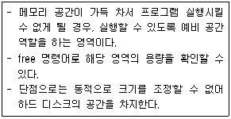
- 페이징(Paging)
- 스왑(Swap)
- 루틴(Routine)
- 링크(Link)
(정답률: 83%)

2. 다음에서 설명하는 운영체제로 알맞은 것은?
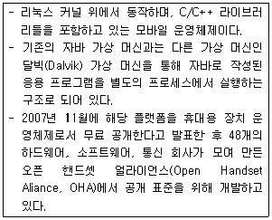
- 안드로이드(Android)
- 타이젠(Tizen)
- 미고(MeeGo)
- 바다(Bada) OS
(정답률: 77%)
3. 다음 중 ( 괄호 ) 안에 들어갈 내용으로 알맞은 것은?
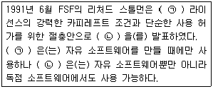
- ㉠ : GPL, ㉡ : LGPL
- ㉠ : LGPL, ㉡ : GPL
- ㉠ : GPL, ㉡ : MPL
- ㉠ : MPL, ㉡ : GPL
(정답률: 75%)
4. 다음 중 리눅스의 특징으로 틀린 것은?
- 리눅스는 이더넷(Ethernet), SLIP, PPP 등의 다양한 네트워크 환경을 지원하며 TCP/IP, IPX 등의 네트워크 프로토콜도 지원한다.
- 리눅스는 다른 운영체제에 비해 이식성, 확장성 등이 뛰어나지만, 특정 하드웨어에 설치가 어렵고 모든 플랫폼에서 작동하지는 않는다.
- 리눅스는 서버, 개발용, PC용들 다양한 목적으로 사용할 수 있고, 이에 따른 다양한 배포 판이 존재하며, 유료 버전과 무료 버전이 존재한다.
- 리눅스는 Windows FAT32, NTFS, 네트워크 파일시스템인 SMB, CIFS 등의 다양한 파일 시스템을 지원하지만, 시스템 충돌 및 전원 문제로 복구 가능한 저널링 파일시스템을 아직 지원하지 않는다.
(정답률: 72%)
5. 다음 중 운영체제의 특징으로 틀린 것은?
- 운영체제는 커널, 미들웨어, 응용 프로그램 실행 환경과 사용자 인터페이스 프레임 워크를 모두 포괄하여 정의될 수 있다.
- 운영체제의 처리방식은 단순 순차처리 → 분산 네트워크 → 다중 프로그래밍 → 모바일 및 임베디드 형식으로 발전되어 왔다.
- 스마트폰과 태블릿에 설치되는 모바일 운영체제, 웹 브라우저만 있으면 사용 가능한 웹 운영체제도 사용되고 있다.
- 최근의 운영체제는 유휴 자원의 효율적 활용을 위해 가상화 기술을 기본적으로 내장하거나 커널(Kernel) 단에서 지원하고 있다.
(정답률: 67%)
6. 다음 중 원격지에서 사용자 기반 인증 X 클라이언트를 이용하기 위해 관련된 명령어 또는 환경 변수로 틀린 것은?
- xhost
- xauth
- DISPLAY 환경 변수
- TERM 환경 변수
(정답률: 61%)
7. 다음 중 아래의 파일을 실행하는 방법으로 틀린 것은?
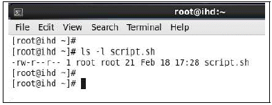
- #sh script.sh
- #. script.sh
- #source script.sh
- #./script.sh
(정답률: 50%)
8. root패스워드를 분실해서 싱글모드로 부팅 후 패스워드를 초기화 하려고 한다. 다음 중 GRUB 부트 화면에서 키 입력 순서로 알맞은 것은?
- "a"키 누른 후 맨 뒤에 "1" 입력
- "e"키 누른 후 맨 뒤에 "b" 입력
- "c"키 누른 후 맨 뒤에 "1" 입력
- "c"키 누른 후 맨 뒤에 "single" 입력
(정답률: 50%)
9. 현재 터미널에서 아파치 웹 서버 데몬(httpd)을 실행하기 위한 명령으로 틀린 것은?
- /etc/rc.d/init.d/httpd start
- chkconfig httpd on
- service httpd start
- /etc/init.d/httpd start
(정답률: 66%)
10. 다음 중 ( 괄호 ) 안에 들어갈 정규표현식 내용으로 알맞은 것은?
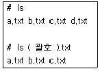
- [ac]
- [!abc]
- [a-c]
- [a~c]
(정답률: 76%)
11. 다음 중 RAID-6에 대한 설명으로 알맞은 것은?
- 최소 3개 이상의 디스크로 구성해야 한다.
- 2개의 디스크 오류가 발생하면 데이터를 복구할 수 없다.
- 200GB 하드디스크 8개를 RAID-6로 구성할 경우 가용 공간은 1.2TB이다.
- 단순한 알고리즘으로 처리 속도도 빠르고, 데이터에 대한 신뢰도도 높다.
(정답률: 62%)
12. 다음중저널링(Journaling) 기술의특징으로틀린것은?
- 데이터를 디스크에 쓰기 전에 별도의 로그에 데이터를 남겨 놓는 기술이다.
- 저널링 기술이 적용된 파일시스템은 ext2, ext3, JFS, ReiserFS 등이 있다.
- 전원공급 문제나 시스템 오류와 같은 상황에 복구가 가능하다.
- fsck로 복구하는 것 보다 속도가 빠르고, 복구의 안정성도 뛰어나다.
(정답률: 67%)
13. 다음 중 LVM의 구성 요소에 대한 설명으로 알맞은 것은?
- VG(Volume Group) : LV가 모여서 생성되는 하나의 큰 덩어리
- PE(Physical Extent) : 실제 디스크에 물리적으로 분할한 파티션, /dev/sdb1, /dev/sdc1등이 이에 해당
- PV(Physical Volume) : Physical Extent에서 나누어 사용하는 일종의 블록 같은 영역, 보통 1PV가 4MB정도씩 할당
- LV(Logical Volume) : VG에서 사용자가 필요한 만큼 할당하여 만들어지는 공간, 물리적 디스크에서 분할하여 사용하는 파티션
(정답률: 57%)
14. 다음 중 셸(Shell)의 특징으로 알맞은 것은?
- bash(배시셸)는 TAB 키를 이용한 자동완성 기능을 제공한다.
- 사용자의 로그인 셸 정보는 /etc/passwd 파일의 6번째 필드에 기록되어 있다.
- ksh(콘 셸)의 경우 히스토리 리스트 버퍼에 저장된 명령들은 위/아래 방향키를 사용하여 검색할 수 있다.
- 리눅스에서는 sh(본 셸)를 기본으로 bash(배시셸)와 csh(C 셸) 계열의 장점만 결합한 ksh(콘 셸)을 표준으로 하고 있다.
(정답률: 65%)
15. 다음과 같은 명령에 대한 설명으로 알맞은 것은?
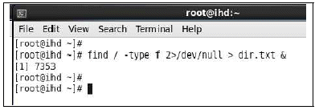
- 작업 번호(Job Number)는 7353이다.
- 해당 작업의 PID정보는 알 수 없다.
- 해당 작업을 포어그라운드로 변경하려면 # fg %7353 명령으로 변경 가능하다.
- 해당 작업의 수행 상태(Running)는 jobs명령으로 확인이 가능하다.
(정답률: 61%)
16. 다음 ( 괄호 ) 안에 들어갈 내용으로 알맞은 것은?(오류 신고가 접수된 문제입니다. 반드시 정답과 해설을 확인하시기 바랍니다.)
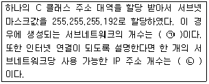
- ㉠ 2, ㉡ 125
- ㉠ 2, ㉡ 126
- ㉠ 4, ㉡ 61
- ㉠ 4, ㉡ 62
(정답률: 56%)
17. 다음 설명에 해당하는 LAN 구성 방식으로 알맞은 것은?
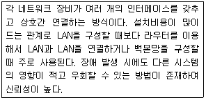
- 망형
- 링형
- 버스형
- 스타형
(정답률: 68%)
18. 다음 중 IPv4 주소 체계와 비교해서 IPv6 주소 체계에 대한 설명으로 틀린 것은?
- 주소 표시 공간이 32비트에서 64비트로 확장 되면서 거의 무한에 가까운 주소를 제공한다.
- IPv6 호스트는 네트워크에 접속하는 순간에 자동적으로 네트워크 주소를 할당받는다.
- IPv4 헤더와 비교하여 헤더 구조가 단순화하여 전송 효율을 높일 수 있다.
- 흐름 제어 기능을 지원하는 필드인 플로 레이블을 도입해서 고품질의 서비스를 지원한다.
(정답률: 63%)
19. 다음 설명에 해당하는 OSI 7 계층으로 알맞은 것은?
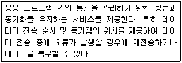
- 네트워크 계층
- 전송 계층
- 세션 계층
- 표현 계층
(정답률: 53%)
20. 다음 중 설정된 IP 주소를 확인하는 명령으로 알맞은 것은?
- ip show
- ip list
- ip addr show
- ip show addr
(정답률: 61%)
2과목: 리눅스 시스템 관리
21. 다음 중 명령어와 설명으로 틀린 것은?
- fdisk : 디스크 파티션을 확인하고 작업하는 명령어
- mkfs : 파일시스템을 생성하는 명령어
- mount : 현재 마운트를 확인하고 작업하는 명령어
- eject : CD/DVD장치를마운트할때사용하는명령어
(정답률: 70%)
22. 다음 중 조건 설명에 맞는 파일과 디렉터리 퍼미션으로 알맞은 것은?
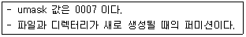
- 파일: rwxrwx---, 디렉터리: rw-rw----
- 파일: rw-rw----, 디렉터리: rwxrwx---
- 파일: rwxrwx---, 디렉터리: rwxrwx---
- 파일: rw-rw----, 디렉터리: rw-rw----
(정답률: 51%)
23. 다음 중 top 명령어 실행 상태에서의 명령 설명으로 알맞지 않은 것은?
- M : 프로세스의 RSS 값으로 정렬한다.
- P : %CPU 값으로 정렬한다.
- r : nice 값을 변경한다.
- k : 화면 갱신하는 시간을 변경한다.
(정답률: 48%)
24. 다음 중 일반적인 오픈 소스 프로그램 소스 컴파일 단계로 알맞은 것은?
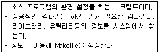
- 압축 풀기
- make install
- configure
- make
(정답률: 57%)
25. 다음 중 /etc/group 파일에 대한 내용 설명으로 알맞은 것은?
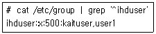
- user1 사용자의 주 그룹은 ihduser이다.
- ihduser 사용자는 kaituser, user1 그룹에 속해 있다.
- user1 그룹은 GID 값이 500이다.
- kaituser 사용자는 ihduser 그룹에 보조 그룹으로 속해 있다.
(정답률: 39%)
26. 다음 중 조건에 맞는 파일로 알맞은 것은?
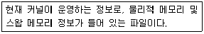
- /proc/cmdline
- /proc/interrupts
- /proc/meminfo
- /proc/uptime
(정답률: 73%)
27. 다음 중 명령어 스크립트의 설명으로 알맞은 것은?
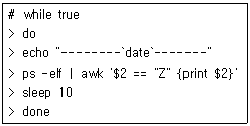
- 백그라운드로 동작중인 프로세스 중 실행 또는 실행될 수 있는 상태의 프로세스를 점검하는 명령이다.
- 작업이 종료되었으나 부모 프로세스로 부터 회수되지 않아 메모리를 차지하고 있는 상태의 프로세스를 점검하는 명령이다.
- 인터럽트에 의한 sleep 상태로 특정 이벤트가 끝나기를 기다리는 프로세스를 점검하는 명령이다.
- 디스크 I/O에 의해대기하고 있는 상태의 프로세스를 점검하는 명령이다.
(정답률: 60%)
28. 다음 중 ( 괄호 ) 안에 들어갈 명령어로 알맞은 것은?(단, 명령어에 옵션은 포함되어 있지 않다.)
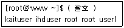
- id
- w
- who
- users
(정답률: 59%)
29. 다음 ( 괄호 ) 안에 들어갈 명령어의 출력 결과로 알맞은 것은?
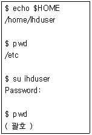
- /home/ihduser
- /etc
- /
- ~/etc
(정답률: 52%)
30. 다음 중 설명하는 명령어로 알맞은 것은?
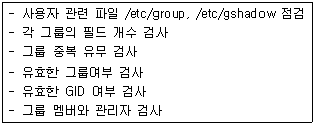
- pwconv
- grpconv
- grpck
- pwck
(정답률: 57%)
31. 다음 중 설명을 참조하여 디스크 작업 순서로 알맞은 것은?
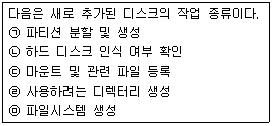
- ㉡ - ㉠ - ㉤ - ㉢ - ㉣
- ㉠ - ㉡ - ㉢ - ㉣ - ㉤
- ㉡ - ㉠ - ㉤ - ㉣ - ㉢
- ㉠ - ㉡ - ㉤ - ㉢ - ㉣
(정답률: 59%)
32. 다음 중 조건에 맞는 crontab 설정으로 올바른 것은?
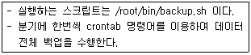
- 0 1 1 3,6,9,12 * /root/bin/backup.sh
- * 3,6,9,12 1 1 0 /root/bin/backup.sh
- 3,6,9,12 * 1 1 0 /root/bin/backup.sh
- 0 1 3,6,9,12 1 * /root/bin/backup.sh
(정답률: 62%)
33. 다음 중 ( 괄호 ) 안에 들어갈 명령으로 알맞은 것은?
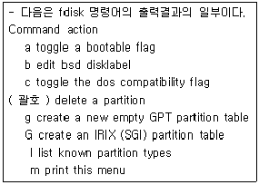
- d
- w
- n
- t
(정답률: 72%)
34. 다음 중 ( 괄호 ) 안에 들어갈 명령어 구문으로 올바른 것은? (단, vsftpd는 패키지 이름이다.)
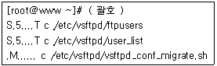
- rpm -V vsftpd
- rpm -qf vsftpd
- rpm -qi vsftpd
- rpm -qc vsftpd
(정답률: 55%)
35. 다음 중 조건을 만족하는 yum 명령어 형식으로 알맞은 것은? (단, sendmail은 패키지 이름이다.)
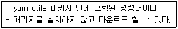
- yumdownload sendmail
- yumdownloader sendmail
- yumlocalinstall sendmail
- yumdowngrade sendmail
(정답률: 47%)
36. 다음 중 ( 괄호 ) 안에 들어갈 옵션으로 알맞은 것은?
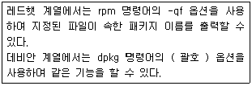
- -P 옵션
- -L 옵션
- -S 옵션
- -l 옵션
(정답률: 28%)
37. 다음 중 ( 괄호 ) 안에 들어갈 압축 명령어와 tar 명령어 옵션 조합으로 틀린 것은?(오류 신고가 접수된 문제입니다. 반드시 정답과 해설을 확인하시기 바랍니다.)
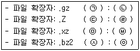
- ㉠ gzip, ㉡ z
- ㉢ compress, ㉣ k
- ㉤ xz, ㉥ J
- ㉦ bzip2, ㉧ j
(정답률: 60%)
38. 다음 중 root 사용자에 대한 설명으로 틀린 것은?
- 슈퍼유저(Super User)라고도 불린다.
- UID값이 0이다.
- su 명령어를이용하여다른사용자로전환할수있다.
- /etc/hosts 파일에사용자에대한기본정보가존재한다.
(정답률: 69%)
39. 다음 중 명령어에 대한 설명으로 알맞은 것은?
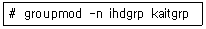
- kaitgrp 사용자를 추가하고 ihdgrp 그룹에 속하도록 한다.
- ihdgrp 그룹의 속성을 관리자 그룹으로 변경한다.
- kaitgrp 그룹의 이름을 ihdgrp 변경한다.
- kaitgrp 그룹을 추가한다.
(정답률: 67%)
40. 다음 중 설명에 맞는 ( 괄호 ) 안에 들어갈 chmod 명령어의 인자값으로 알맞은 것은?
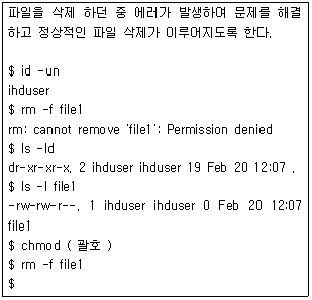
- g+x
- u=rw-
- 775
- 551
(정답률: 60%)
41. 프린터를 병렬 포트에 연결했을 때 생성되는 장치 파일명으로 알맞은 것은?
- /dev/sp0
- /dev/sg0
- /dev/lp0
- /dev/sr0
(정답률: 65%)
42. 다음 중 /etc/passwd 파일을 2매 출력하려고 할 때 ( 괄호 ) 안에 들어갈 명령으로 알맞은 것은?
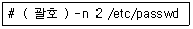
- lp
- lpr
- lpq
- lpc
(정답률: 53%)
43. 다음 중 커널 컴파일 단계에서 가장 마지막에 실행되는 명령으로 알맞은 것은?
- make install
- make bzImage
- make mrproper
- make menuconfig
(정답률: 60%)
44. 다음 결과에 해당하는 명령으로 알맞은 것은?
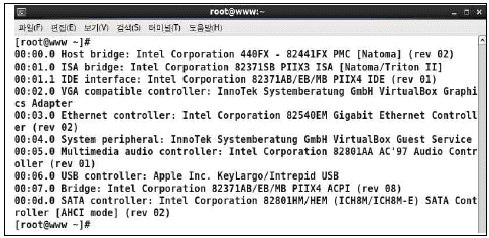
- lsmod
- lspci
- lsblk
- lscgroup
(정답률: 51%)
45. 특정 모듈을 제거하면서 의존성있는 모듈을 같이 제거하려고 할 때 ( 괄호 ) 안에 들어갈 옵션으로 알맞은 것은?
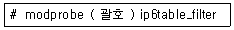
- -a
- -d
- -e
- -r
(정답률: 55%)
46. 로컬 시스템에 직접 연결된 CUPS 프린터를 웹 브라우저를 이용해서 접속하려고 할 때 다음 ( 괄호 ) 안에 들어갈 포트 번호로 알맞은 것은?
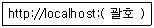
- 631
- 2654
- 5900
- 8080
(정답률: 57%)
47. 다음 ( 괄호 ) 안에 들어갈 내용으로 알맞은 것은?
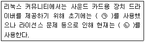
- ㉠ ALSA, ㉡ OSS/Free
- ㉠ OSS/Free, ㉡ ALSA
- ㉠ sane, ㉡ xsane
- ㉠ xsane, ㉡ sane
(정답률: 50%)
48. 다음 중 커널 컴파일을 수행하기 전에 관련 도움말을 확인하는 명령으로 알맞은 것은?
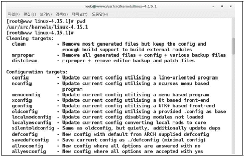
- ./configure --help
- ./make --help
- make --help
- make help
(정답률: 35%)
49. 'uname -r' 명령의 결과가 2.6.32-696.el6.i686이다. 다음 중 모듈 간의 의존성을 기록한 파일의 경로로 알맞은 것은?
- /etc/modprobe.d/2.6.32-696.el6.i686/modules.dep
- /usr/src/kernels/2.6.32-696.el6.i686/modules.dep
- /lib/modules/2.6.32-696.el6.i686/modules.dep
- /usr/local/src/2.6.32-696.el6.i686/modules.dep
(정답률: 54%)
50. 다음 설명에 해당하는 명령으로 알맞은 것은?
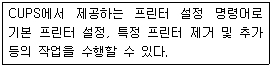
- lpc
- lpinfo
- lpstat
- lpadmin
(정답률: 40%)
51. 다음 중 rsync 명령에 관한 설명으로 틀린 것은?
- 네트워크로 연결된 원격지의 파일들을 동기화하는 유틸리티이다.
- ssh나 rsh를 이용하여 전송 가능하고 root권한이 필요 없다.
- rcp에 비해 처리속도는 느리나 다양한 기능을 제공한다.
- 로컬 시스템 백업 시에는 별다른 서버 설정 없이 사용이 가능하다.
(정답률: 46%)
52. 다음 중 dd 명령어에 대한 설명으로 알맞은 것은?
- 파티션이나 디스크 단위로 백업할 때 사용한다.
- 많은 양의 데이터 작업에 대해 tar보다 빠르다.
- 디렉터리 단위로 데이터를 삭제할 때 사용한다.
- 사용자를 인증하고 접근을 제어할 때 사용한다.
(정답률: 59%)
53. SSH(Secure Shell)의 설명으로 틀린 것은?
- 원격복사(scp)를 지원한다.
- 안전한 파일전송(sftp)를 지원한다.
- 기본 사용 포트는 23이다.
- rsh처럼 원격 셸을 지원한다.
(정답률: 64%)
54. 다음 설명하는 내용에 알맞은 것은?
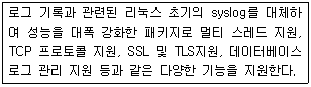
- asyslog
- rsyslog
- msyslog
- vsyslog
(정답률: 67%)
55. 다음 중 PAM(Pluggable Authentication Modules)의 구성 항목과 설명에 대해 알맞은 것은?
- account : 생체인증과 같은 다른 인증을 통해 사용자를 판별한다.
- auth : 사용자가 그들의 인증방법을 변경하기 위한 방법을 제공한다.
- session : 사용자가 인증받기 전후에 해야 할 것을 나타낸다.
- required : 사용자가 해당 서비스에 접근이 허용되는지 여부를 검사한다.
(정답률: 38%)
56. 다음 중 가장 최근에 시스템이 재부팅된 정보를 하나만 출력하려 할 때 알맞은 명령은?
- last –1 reboot
- last –L 1 reboot
- lastb –1 reboot
- lastb –L 1 reboot
(정답률: 51%)
57. 다음 중 sudo에 관련된 설명이 아닌 것은?
- 특정 사용자 또는 특정 그룹에 root 사용자 권한을 가질 수 있게 하는 도구이다.
- visudo는 환경설정파일을 편집할 때 사용하는 명령이다.
- 적용된 사용자는 'sudo 명령어' 형태로 실행하며 root 권한을 대행한다.
- 환경설정파일은 /etc/sudo 이다.
(정답률: 57%)
58. 다음 설명에 알맞은 것은?
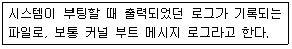
- /var/log/secure
- /var/log/dmesg
- /var/log/lastlog
- /var/log/wtmp
(정답률: 62%)
59. 다음 각 명령어와 관계있는 파일 연결이 틀린 것은?
- last : /var/log/tmp
- lastb : /var/log/btmp
- lastlog : /var/log/lastlog
- dmesg : /var/log/dmesg
(정답률: 61%)
60. 다음 중 로그 환경설정 파일에 대한 설명으로 틀린 것은?
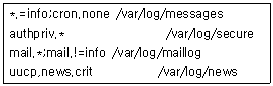
- 인증 관련 로그를 /var/log/secure에 기록한다.
- uucp 및 news에서 발생하는 crit 수준 이상 메시지를 /var/log/news에 기록한다.
- mail에서 발생하는 모든 메시지중 info 수준이 아닌 것만 /var/log/maillog에 기록한다.
- 모든 facility가 발생하는 메시지 중 info 수준 메시지만 기록하는데 cron관련 메시지는 제외한다.
(정답률: 34%)
3과목: 네트워크 및 서비스의 활용
61. 다음에서 설명하는 내용으로 알맞은 것은?
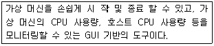
- virsh
- xm
- virt-manager
- virt-top
(정답률: 55%)
62. 웹 사이트에 접속 하는 중 접근 금지 오류가 발생됐다. 다음 중 이에 해당하는 HTTP 상태 코드 번호로 알맞은 것은?
- 400
- 403
- 404
- 408
(정답률: 54%)
63. 다음 중 LDAP 속성에 대한 설명으로 알맞은 것은?
- sn : 조직(회사) 이름
- ou : 조직의 부서 이름
- dc : 도로명 주소(지번)
- c : 주(우리나라의 도) 이름
(정답률: 51%)
64. NIS서버를 구성하려고 한다. 다음 중 NIS에서 사용할 도메인을 재부팅 시에도 적용되도록 등록하기 위한 파일로 알맞은 것은?
- /etc/yp.conf
- /etc/networks
- /etc/ypserv.conf
- /etc/sysconfig/network
(정답률: 50%)
65. 다음 중 삼바(samba)에 대한 설명으로 틀린 것은?
- 삼바는 GPL기반의 자유소프트웨어이다.
- 삼바는 리눅스와 윈도우간 디렉터리 및 파일 공유시 사용된다.
- 삼바는 3개의 데몬을 사용하는데 각 데몬 명은 smbd, nmbd, bmbd 이다.
- 삼바의 환경 설정 파일인 smb.conf 파일은 Global Setting과 Share Definitions의 영역으로 구분된다.
(정답률: 58%)
66. 다음에서 설명하는 웹브라우저로 알맞은 것은?
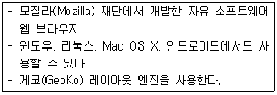
- 오페라(Opera)
- 크롬(Chrome)
- 사파리(Safari)
- 파이어폭스(Firefox)
(정답률: 64%)
67. 다음 중 PHP 5.3이상 버전에서 파일 작성 시 사용되는 태그로 알맞은 것은?
- <php ∼ >
- <!php ∼ !>
- <?php ∼ ?>
- <*php ∼ *>
(정답률: 63%)
68. 다음 중 smbclient명령을 이용해 삼바(Samba) 서버의 공유 디렉터리 정보를 확인하는 옵션으로 알맞은 것은?
- -L
- -M
- -N
- -U
(정답률: 57%)
69. 다음 중 메일 서버 역할(MTA)을 수행하는 프로그램으로 틀린 것은?
- kmail
- qmail
- postfix
- sendmail
(정답률: 49%)
70. 다음 중 /etc/aliases의 정보를 읽어 들여 관련 DB 정보를 업데이트 하는 명령으로 알맞은 것은?
- mailq -Ac
- sendmail -bi
- sendmail -bp
- sendmail -bp -oQ
(정답률: 50%)
71. 다음 중 DNS구성을 위한 named.conf파일의 설명으로 틀린 것은?
- 주석은 유닉스계열에서 사용하는 "#" 으로만 사용할 수 있다.
- include 지시자를 선언하여 별도의 파일에 추가 정의할 수 있다.
- named.conf파일이 구성은 크게 주석문과 구문으로 구성되어 있다.
- 각 구문은 중괄호"{ }"로 둘러싸고 끝날 때는 세미콜론";"을 사용한다.
(정답률: 54%)
72. 다음 중 DNS(Domain Name Server)서버에서 Zone 파일 정의를 위한 SOA레코드 항목으로 틀린 것은?
- Serial_number
- Retry_number
- Expire_number
- Maxinum_number
(정답률: 46%)
73. 다음 중 리버스 존(Reverse zone) 파일에서만 사용되는 레코드 타입으로 알맞은 것은?
- A
- NS
- CNAME
- PTR
(정답률: 63%)
74. 다음에서 설명하는 가상화의 종류로 알맞은 것은?
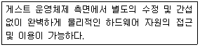
- 전가상화
- 반가상화
- 호스트 기반 가상화
- 하이 레벨 언어 가상화
(정답률: 58%)
75. 다음에서 설명하는 가상화의 기술로 알맞은 것은?
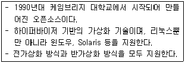
- Xen
- KVM
- VirtualBox
- Docker
(정답률: 54%)
76. 다음 중 네트워크 기반의 인증 관련 서비스로 틀린 것은?
- NIS
- SSL
- LDAP
- Active Directory
(정답률: 47%)
77. 다음에서 설명하는 프로그램으로 알맞은 것은?
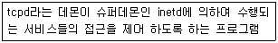
- Proxy
- Squid
- Xinetd
- TCP Wrapper
(정답률: 44%)
78. 다음 중 ( 괄호 ) 안에 들어갈 내용으로 가장 알맞은 것은?
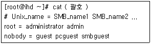
- /etc/samba/user
- /etc/samba/users
- /etc/samba/smbuser
- /etc/samba/smbusers
(정답률: 45%)
79. FTP서버 구성 후 /etc/hosts.allow와 /etc/hosts.deny 파일을 이용한 접근제어를 설정하려고 한다. 다음 중 vsftpd.conf파일에 수정되어야할항목으로알맞은것은?
- tcp_wrappers
- userlist_enable
- session_support
- pam_service_name
(정답률: 42%)
80. 아래와 같이 공유 디렉터리를 설정하려고 한다. 다음 중 NFS 서버 설정 옵션으로 알맞은 것은?
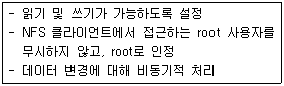
- rw, root_squash, secure
- rw, root_squash, anonuid
- rw, no_root_squash, async
- rw, no_root_squash, no_subtree_check
(정답률: 59%)
81. 다음은 sendmail의 매크로 설정파일을 복원하는 과정이다. ( 괄호 )안에 들어갈 내용으로 알맞은 것은?
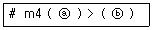
- ⓐ /etc/mail/sendmail.mc ⓑ /etc/mail/sendmail.cf
- ⓐ /etc/mail/sendmail.cf ⓑ /etc/mail/sendmail.mc
- ⓐ /etc/mail/sendmail.m4 ⓑ /etc/mail/sendmail.cf
- ⓐ /etc/mail/sendmail.cf ⓑ /etc/mail/sendmail.m4
(정답률: 51%)
82. 다음 중 ( 괄호 )안에 들어갈 내용으로 알맞은 것은?
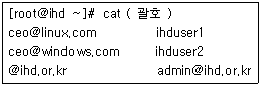
- /etc/aliases
- /etc/mail/access
- /etc/mail/virtusertable
- /etc/mail/local-host-names
(정답률: 36%)
83. 다음과 같이 메일서버로 접근하는 호스트나 도메인을 제어하려고 한다. 설정에 대한 설명으로 틀린 것은?
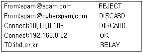
- 받는 사람이ihd.or.kr 도메인이라면 접근을허용한다.
- 192.168.0.82로접속하는클라이언트는메일을허가한다.
- 보낸 사람이 spam@spam.com 이면 메일을 거절하고 거부 메시지를 보낸다.
- 보낸 사람이 spam@cyberspam.com 이면 메일을 거절하고 거부 메시지를 보낸다.
(정답률: 58%)
84. 다음 중 가상화의 기능에 대한 설명으로 틀린 것은?
- 공유(sharing) : 다수의 많은 가상 자원들이 하나의 동일한 물리적 자원과 연결되어 있거나 가리키는 것을 말한다.
- 단일화(Aggregation) : 사용자는 마치 자기가 해당 자원을 혼자서만 사용하는 것과 같은 착각을 하게 해주는 것
- 에뮬레이션(Emulation) : 물리적 자원 자체에는 원래부터 존재하지 않았지만 가상 자원에는 어떤 기능들이나 특성들을 마치 처음부터 존재했던 것처럼 가질 수 있다.
- 절연(Insulation) : 가상화 자원들 또는 가상화 자원들을 사용하는 사용자에게 아무런 영향을 미치지 않으면서 물리적인 자원들이 교체될 수 있도록 해준다.
(정답률: 52%)
85. 다음 ( 괄호 )안에 들어갈 내용으로 알맞은 것은?
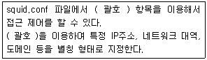
- acl
- suid
- ags
- proxy
(정답률: 62%)
86. 다음은 zone파일의 문법적 오류를 검사하는 명령으로 ( 괄호 )안에 들어갈 내용으로 알맞은 것은?
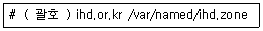
- named-check
- named-checkzone
- named-checkconf
- named-check-config
(정답률: 52%)
87. xinetd에서 생성하는 관련 데몬의 최대 개수를 50으로 지정하려고 한다. 다음 중 ( 괄호 )안에 들어갈 내용으로 알맞은 것은?
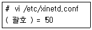
- instance
- instances
- per_source
- per_sources
(정답률: 55%)
88. DHCP서버를 구성해 클라이언트에 192.168.0.2 부터 192.168.0.254까지 IP를 할당하려고 한다. 다음 중 dhcpd.conf 파일에 설정되는 옵션으로 알맞은 것은?
- range 192.168.0.2 192.168.0.254;
- range 192.168.0.2-192.148.0.254;
- range 192.168.0.2, 192.168.0.254;
- range 192.168.0.2∼192.168.0.254;
(정답률: 58%)
89. 다음 중 VNC서버에서 해상도를 변경하는 파일로 알맞은 것은?
- /etc/vnc.conf
- /etc/vncservers
- /etc/sysconfig/vnc.conf
- /etc/sysconfig/vncservers
(정답률: 33%)
90. 다음 중 NTP에 대한 설명으로 틀린 것은?
- NTP란 컴퓨터간 시간을 동기화 하는데 사용되는 프로토콜이다.
- NTP서버를 이용해서 시간을 동기화 할 때 사용하는 명령어는 ntpdate이다
- NTP서버는 여러 계층으로 구성되는데, 각 계층을 나타내는 용어로 Class를 사용한다.
- NTP서버를 등록하기 위해서는 환경 설정 파일인 /etc/ntp.conf 내에서 등록할 수 있다.
(정답률: 58%)
91. 아파치 웹 데몬 시작 시 아래와 같은 오류가 발생됐다. 다음 중 이 문제를 해결하기 위해 설정되는 파일로 가장 알맞은 것은?
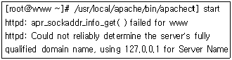
- /etc/hosts
- /etc/netconfig
- httpd-default.conf
- httpd-userdir.conf
(정답률: 49%)
92. 다음은 DNS서버 zone 파일의 일부이다. ( 괄호 )안에 들어갈 내용으로 알맞은 것은?
- A
- NS
- MX
- CNAME
(정답률: 55%)
93. 다음은 소스 파일을 이용한 Apache 설치 중 관련 모듈을 동적 모듈로 지정하여 설치하는 화면 일부이다. ( 괄호 )안에 들어갈 내용으로 알맞은 것은?
- --nodeps
- --with-apxs2
- --enable-mods-shared
- --with-config-file-path
(정답률: 46%)
94. 다음은 삼바(Samba)에서 공유 정의(Share Definitions) 일부이다. 설정 상태 설명으로 틀린 것은?
- 공유 디렉터리는 /share로 설정한다.
- 사용자의 파일 생성, 삭제 권한은 알 수 없다.
- 윈도우에서 접근할 때에 폴더 이름은 www 이다.
- 해당 디렉터리에 접근은 사용자 ihduser1과 ihduser2만 가능하다.
(정답률: 55%)
95. 아파치 소스 파일이 정상적으로 다운로드 되었는지 검증해 보려고 한다. 다음 중 ( 괄호 ) 안에 들어갈 내용으로 알맞은 것은?
- md5
- md5sum
- md5hash
- md5source
(정답률: 40%)
96. 다음 중 ssh 포트를 들어오는 공격을 막기 위해 사용 가능한 보안 도구로 틀린 것은?
- iptables
- Tripwire
- fail2ban
- TCP wrapper
(정답률: 40%)
97. 다음 설명에 해당하는 침해 유형으로 가장 알맞은 것은?
- DoS
- 랜섬웨어
- 트로이목마
- 웜바이러스
(정답률: 69%)
98. 다음 중 성능 향상을 위한 TOS(Type of Service) 설정과 같이 패킷 데이터를 변경하는 특수 규칙을 적용하는 iptables의 테이블로 알맞은 것은?
- filter
- nat
- mangle
- raw
(정답률: 45%)
99. 다음 중 나머지 셋과 다른 유형의 공격도구로 알맞은 것은?
- Crypolocker
- Stacheldraht
- Trinoo
- TFN
(정답률: 41%)
100. 다음 설명에 해당하는 DoS 공격 기법으로 알맞은 것은?
- Smurf Attack
- Ping of Death
- Teardrop Attack
- Land Attack
(정답률: 57%)